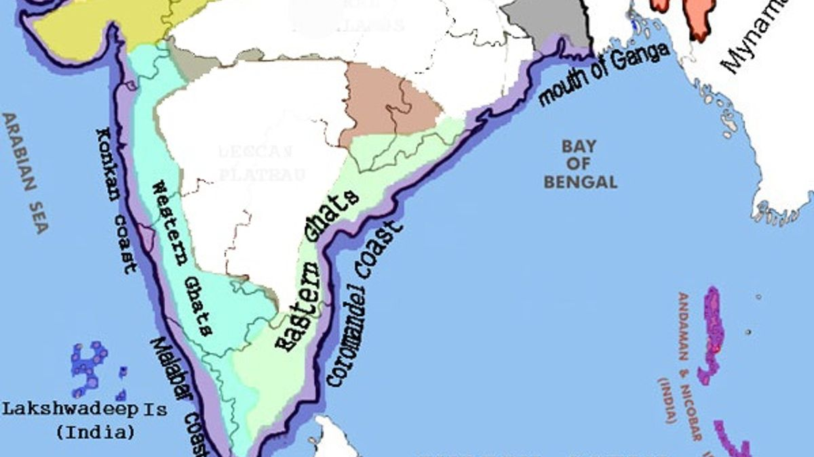
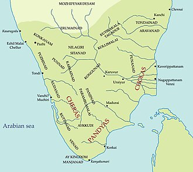
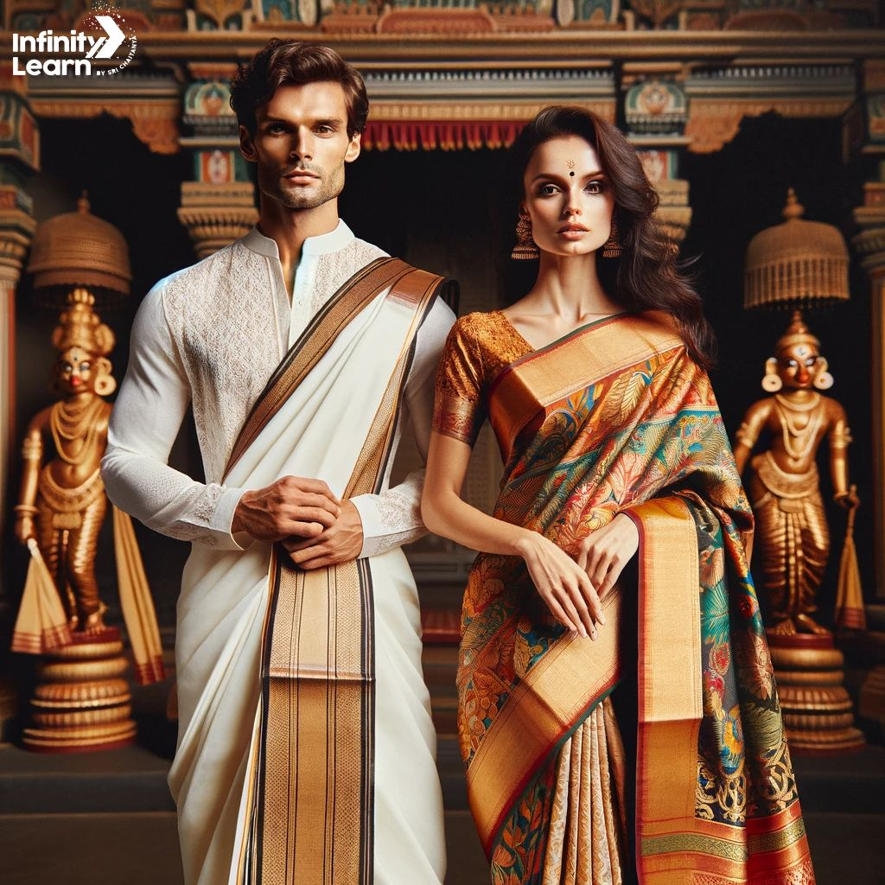
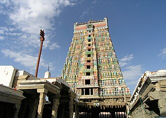

Overview
Tamil Nadu is the southernmost state of India. The tenth largest Indian state by area and the sixth largest by population, Tamil Nadu is the home of the Tamil people, who speak the Tamil language, one of the longest surviving classical languages and which serves as its official language. The capital and largest city is Chennai.
Geography
Located on the south-eastern coast of the Indian peninsula, Tamil Nadu is straddled by the Western Ghats and Deccan Plateau in the west, the Eastern Ghats in the north, the Eastern Coastal Plains lining the Bay of Bengal in the east, the Gulf of Mannar and the Palk Strait to the south-east, the Laccadive Sea at the southern cape of the peninsula, with the river Kaveri bisecting the state. Politically, Tamil Nadu is bound by the Indian states of Kerala to the west, Karnataka to the northwest, Andhra Pradesh to the north, and encloses part of the union territory of Puducherry. It shares an international maritime border with the Northern Province of Sri Lanka at Pamban Island.
History

Sangam period (5th century BCE–3rd century CE)
Tamilakam during the Sangam Period (500 BCE–300 CE)
Main articles: Sangam period, Tamilakam, and Sangam landscape
The Sangam period lasted for about eight centuries, from 500 BCE to 300 CE with the main source of history during the period coming from the Sangam literature. Ancient Tamilakam was ruled by a triumvirate of monarchical states, Cheras, Cholas and Pandyas. The Cheras controlled the western part of Tamilkam, the Pandyas controlled the south, and the Cholas had their base in the Kaveri delta. The kings called Vendhar ruled over several tribes of Velala (peasants), headed by the Velir chiefs. The rulers patronized multiple religions including vedic religion, Buddhism and Jainism and sponsored some of the earliest Tamil literature with the oldest surviving work being Tolkāppiyam, a book of Tamil grammar.
The kingdoms had significant diplomatic and trade contacts with other kingdoms to the north and with the Romans. Much of the commerce from the Romans and Han China were facilitated via seaports including Muziris and Korkai with spices being the most prized goods along with pearls and silk. From 300 CE, the region was ruled by the Kalabhras, warriors belonging to the Vellalar community, who were once feudatories of the three ancient Tamil kingdoms.
Culture
Clothing
Kanchipuram silk saris worn by women on special occasions Tamil women traditionally wear a sari, a garment that consists of a drape varying from 5 to 9 yards (4.6 to 8.2 m) in length and 2 to 4 feet (0.61 to 1.22 m) in breadth that is typically wrapped around the waist, with one end draped over the shoulder, baring the midriff, as according to Indian philosophy, the navel is considered as the source of life and creativity. Ancient Tamil poetry such as the Cilappadhikaram, describes women in exquisite drapery or sari. The men wear a dhoti, a 4.5 metres (15 ft) long, white rectangular piece of non-stitched cloth often bordered in brightly coloured stripes. It is usually wrapped around the waist and the legs and knotted at the waist.
Architecture

Dravidian architecture is the distinct style of rock architecture in Tamil Nadu. In Dravidian architecture, the temples consisted of porches or mantapas preceding the door leading to the sanctum, gate-pyramids or gopurams in quadrangular enclosures that surround the temple, and pillared halls used for many purposes. These features are the invariable accompaniments of these temples. Besides these, a South Indian temple usually has a tank called the kalyani or pushkarni. The gopuram is a monumental tower, usually ornate at the entrance of the temple forms a prominent feature of koils and Hindu temples of the Dravidian style. They are topped by the kalasam, a bulbous stone finial and function as gateways through the walls that surround the temple complex. The gopuram's origins can be traced back to the Pallavas who built the group of monuments in Mahabalipuram and Kanchipuram.